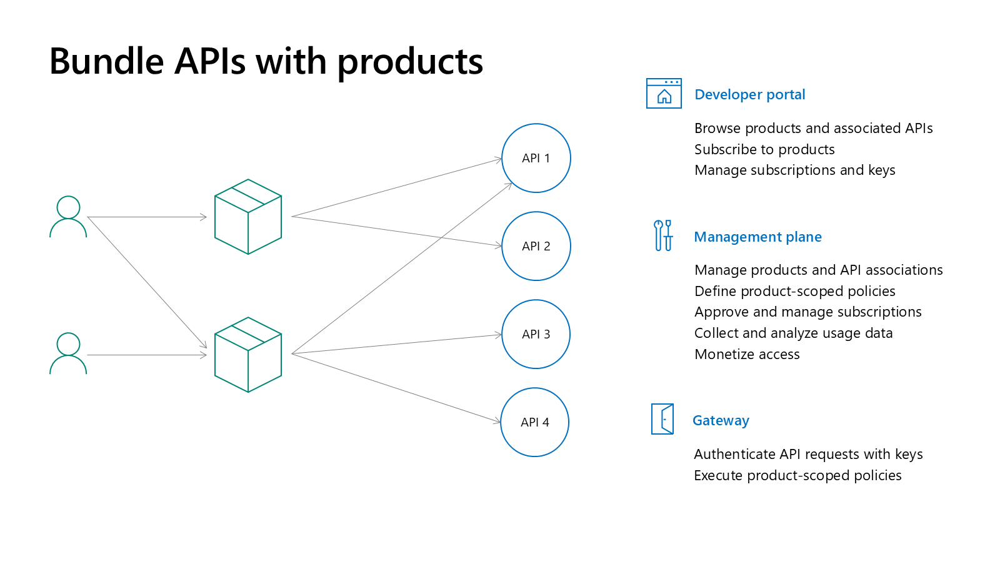
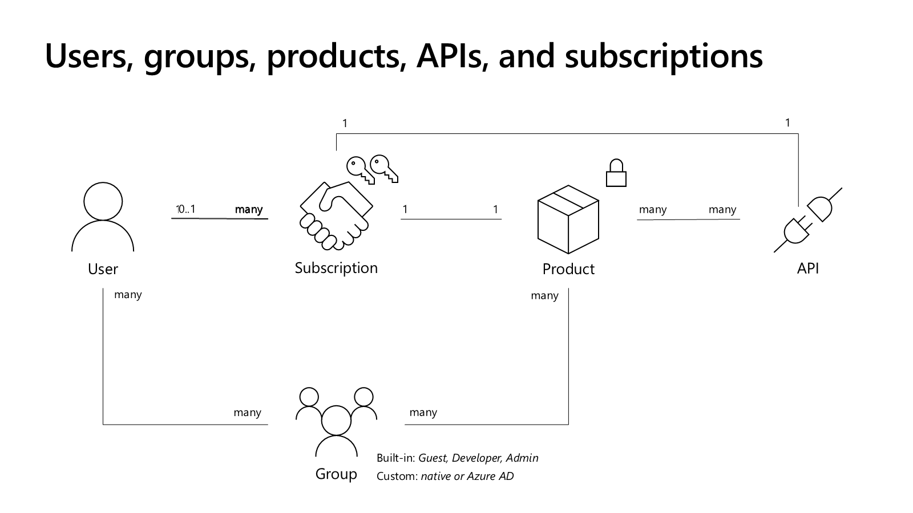

Connect the Building Blocks
| Building block | Role |
|---|---|
| API | The frontend operations and contract you expose. |
| Product | A bundle of APIs offered to a group of consumers. An API can appear in multiple products. |
| Group | A way to organize developer access and product visibility. |
| Subscription | A named container for a pair of access keys, scoped to a product, API, or all APIs. |
| Portal content | Pages, styling, and navigation you publish alongside API Management data. |
Design the Consumer Journey
flowchart LR
P[Published product] --> D[Discover APIs]
D --> S[Request subscription]
S --> A[Access approved]
A --> C[Call gateway]
class P azure
class D,S neutral
class A,C success
Blue is the published offering. Gray steps are consumer actions; green is approved access and successful use.
Choose whether subscriptions need approval and who can see the product. The portal's profile experience shows product-scoped subscriptions; do not assume every administrative subscription appears there.
Choose the Right Discovery Surface
The APIM developer portal supports consumption of the APIs you publish through that APIM service. API Center provides a broader inventory across lifecycle stages and deployment locations, with its own discovery experiences.
Key takeaway
A good portal is more than branding. Consumers need useful operation descriptions, realistic examples, clear access rules, and a test path that works with their credentials.
Build the published journey in Lab 04.
Model Product Access and Visibility Separately

A product packages APIs for a consumer audience. For example, partner and internal products can expose overlapping API sets while using different visibility and subscription-approval choices. Publishing a product, granting visibility, and approving a subscription are different actions.

Built-in groups are Administrators, Developers, and Guests. Custom groups and supported external Microsoft Entra groups can organize product visibility. A developer can belong to more than one group, but group visibility is not itself proof that an API call is authorized.
Subscriptions can be scoped to a product, one API, or all APIs. An application should use its intended consumer scope rather than an administrator's all-access key. Confirm approval state and effective policies with that actual subscription; see the product-policy inheritance exception.
Customize the Portal Before Taking Over Its Hosting
The portal combines code and content. Widgets, styling definitions, a rendering engine, and the visual editor provide the experience; pages, media, layouts, styles, and settings provide portal content. APIs, products, operations, and subscriptions come from APIM data, not from manually duplicating API descriptions on a page.
| Need | Option | Ownership |
|---|---|---|
| Branding, navigation, onboarding text, API lists | Managed portal visual editor, layouts, styles, and existing widgets | You maintain content and publication; the service maintains the managed portal. |
| Small embedded content or custom functionality | Custom HTML widget or a developed custom widget | You review and maintain the customization and its dependencies. |
| Changes to the core portal code | Open-source contribution or a self-hosted fork | A self-hosted fork adds deployment, hosting, maintenance, and update responsibilities. |
Start with the managed experience and only self-host when the requirement needs core-code changes. Self-hosting is not simply a styling switch and does not preserve every managed feature; current documentation specifically distinguishes support for portal content visibility/access controls. Validate those requirements before committing to a fork.
Portal deployment can be automated, but portal content publication and API configuration deployment remain separate concerns. Review content and data together, then test the published consumer experience after promotion. Lab 04 covers the managed-editor procedure without adding a self-hosted deployment.
Support Consumption Beyond the API List
Consumer-facing usage reports help developers understand their own calls; provider analytics support service-wide operation. They are different reporting surfaces with tier and data-source constraints. Use the canonical monitoring and reports comparison before promising a report to consumers.
For Power Platform consumers, APIM can export an API as a custom connector for an intended Power Platform environment. This is another consumption channel, not another backend deployment or an automatic grant of access. Review connector authentication, subscription requirements, and lifecycle ownership alongside the published contract.
A useful onboarding experience answers four questions: what can I call, how do I obtain access, what does a successful request look like, and how do I diagnose a denied request? Keep code examples and documentation aligned with the same contract you test at the gateway.